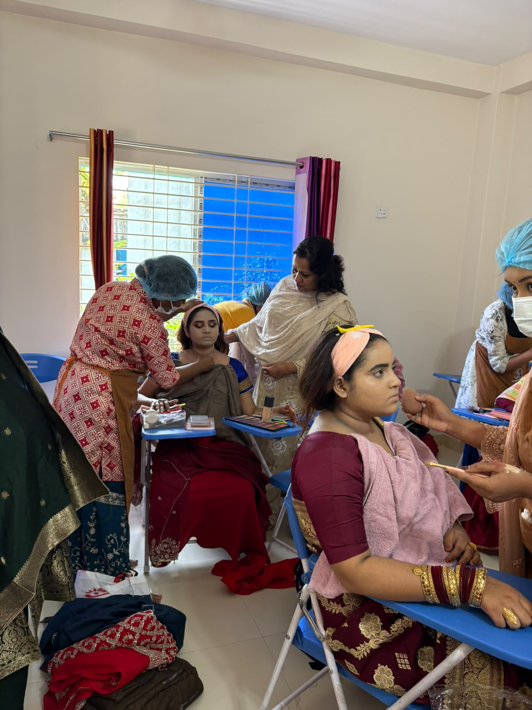
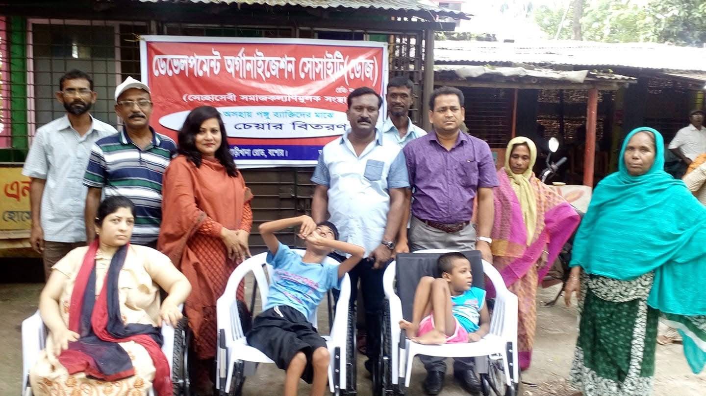
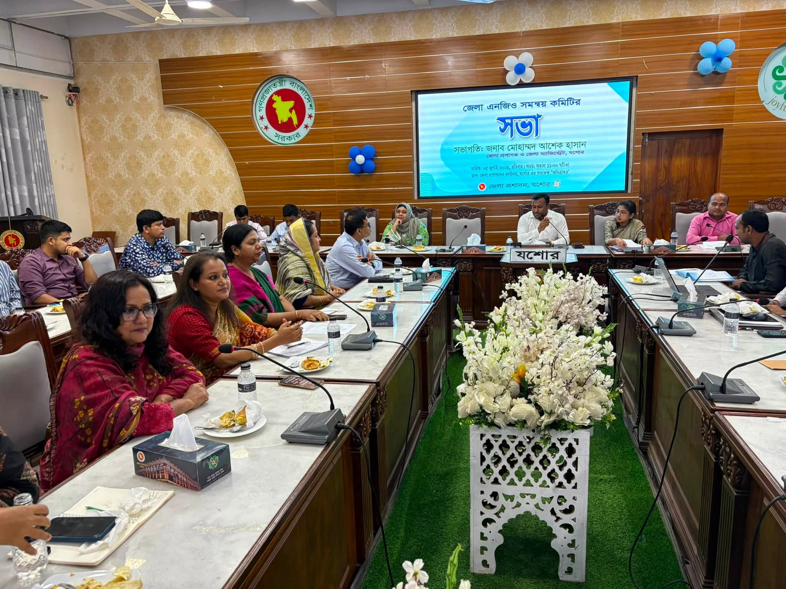
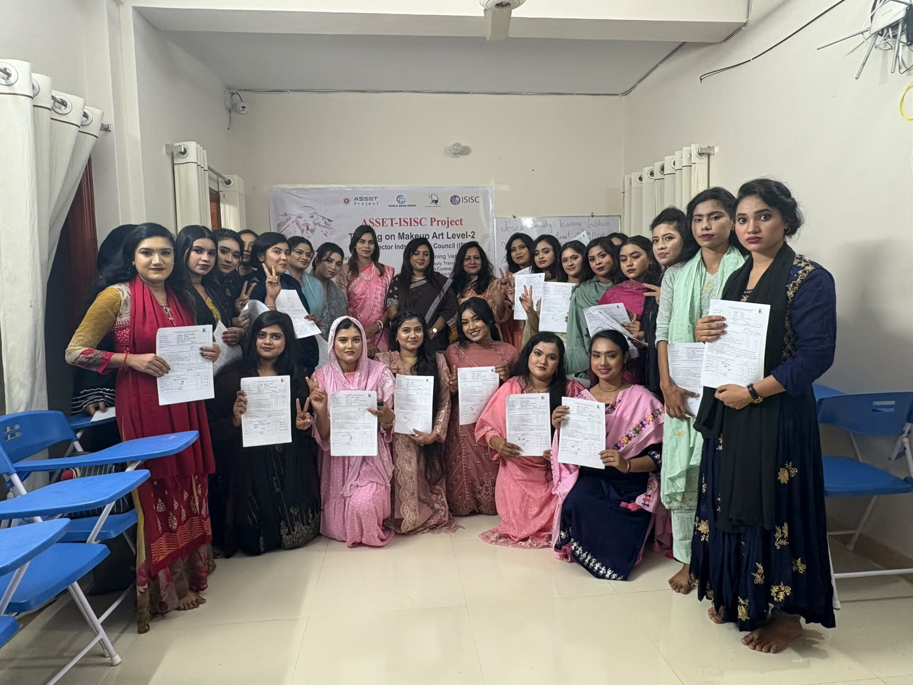
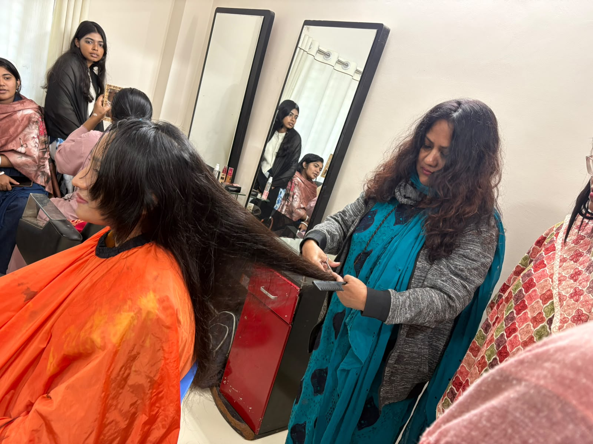
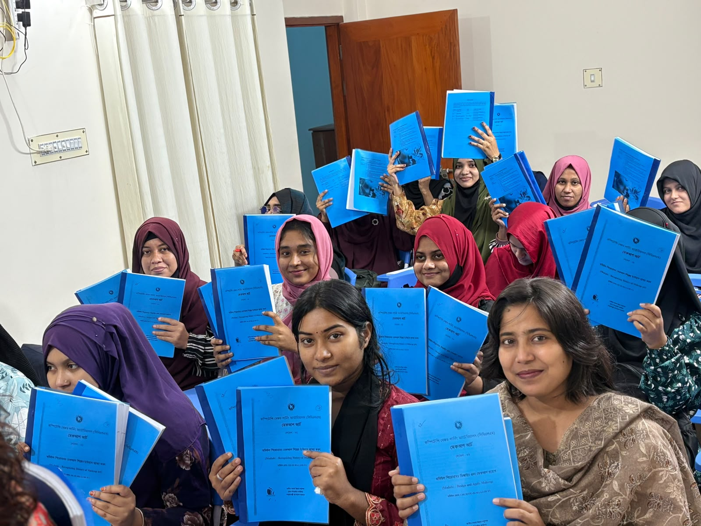
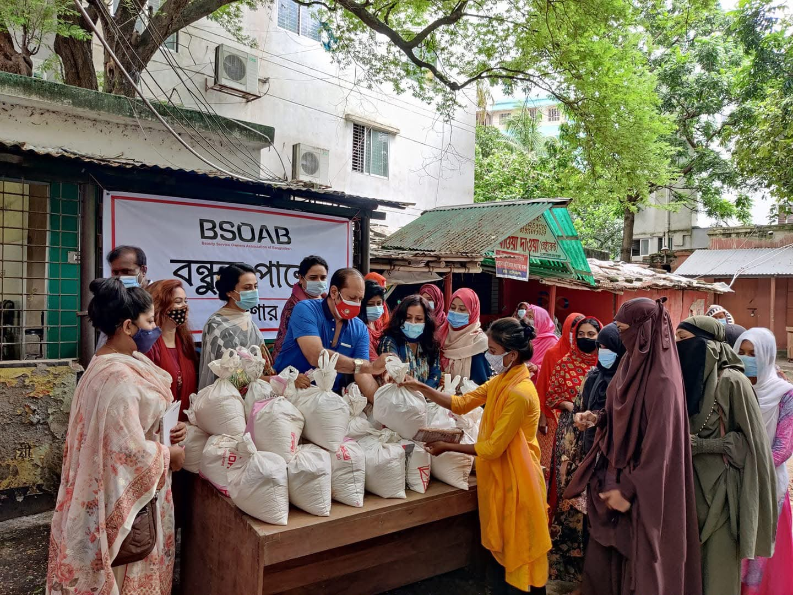
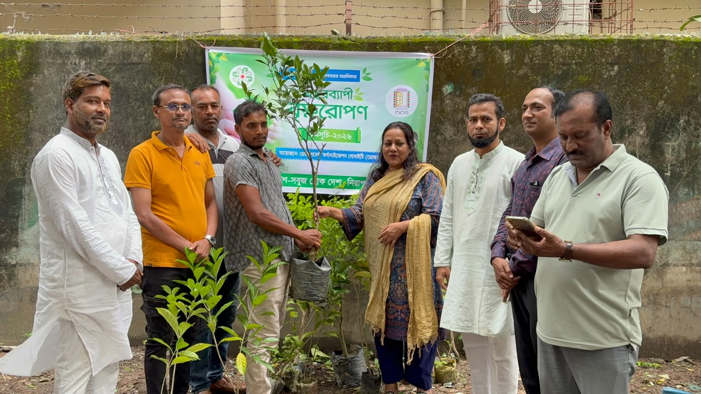

০১
মেকআপ আর্ট
পেশাগত মেকআপ ও ব্যবহারিক সৌন্দর্যসেবা প্রশিক্ষণ।
যশোর, খুলনা, বাংলাদেশ
Development Organization Society (DOS)
সমাজের উন্নয়ন, দক্ষতা গড়ে তোলা এবং ইতিবাচক পরিবর্তনের সুযোগ তৈরি।
নারী উন্নয়ন · দক্ষতা উন্নয়ন · সামাজিক উন্নয়ন
নারী উন্নয়ন দেখুন যোগাযোগ করুন
সংক্ষিপ্ত পরিচিতি
ডেভলপমেন্ট অরগানাইজেশন সোসাইটি (ডোজ) যশোরে নিবন্ধিত একটি সমাজকল্যাণমূলক সংস্থা। ২০০২ সাল থেকে সংস্থাটি নারীদের স্বাবলম্বী ও আত্মউন্নয়ন এবং পিছিয়ে পড়া জনগোষ্ঠী ও সমাজে অবহেলিত তৃতীয় লিঙ্গের মানুষের কল্যাণে কাজ করে আসছে।

আমাদের সম্পর্কে
ডোজ যশোর সদর ও যশোর পৌরসভায় কাজ করে। প্রধান কার্যালয় যশোর সদরে এবং জেলা কার্যালয় গাড়ীখানা রোড, যশোরে অবস্থিত। সংস্থাটি জাতীয় সমাজসেবা অধিদপ্তরের আওতায় নিবন্ধিত।
লক্ষ্য: সামাজিক কল্যাণ
উদ্দেশ্য
১. নারীদের স্বাবলম্বী ও আত্মউন্নয়ন করা
২. পিছিয়ে পড়া জনগোষ্ঠী ও সমাজে অবহেলিত তৃতীয় লিঙ্গের মানুষের কল্যাণ করা
নেতৃত্ব
রোজী হোসেন — নির্বাহী পরিচালক
মারফত হোসেন — সভাপতি
প্রধান কার্যক্রম
দক্ষতা, প্রশিক্ষণ ও স্বনির্ভরতার মাধ্যমে নারীদের ক্ষমতায়ন
ডোজ বেকার ও অর্থনৈতিকভাবে পিছিয়ে পড়া নারীদের জন্য ব্যবহারিক দক্ষতা ও বৃত্তিমূলক প্রশিক্ষণের সুযোগ দেয়। এটি শুধু একটি সৌন্দর্য কোর্স নয় — জীবিকা উন্নয়নের একটি উদ্যোগ। প্রশিক্ষণ পরিচালিত হয় জেসিকা বিউটি ট্রেনিং ইনস্টিটিউটে, যশোর সদর।


০১
পেশাগত মেকআপ ও ব্যবহারিক সৌন্দর্যসেবা প্রশিক্ষণ।
০২
ব্যবহারিক বিউটিফিকেশন ও সেলুন-সেবার দক্ষতা।

০৩
চুল সাজানো ও সংশ্লিষ্ট পেশাগত সেলুন দক্ষতা।
০৪
পেশাগত ত্বকপরিচর্যা ও সৌন্দর্য পরিচর্যা প্রশিক্ষণ।

০৫
বিউটি পার্লার বা স্বনির্ভর উদ্যোগে পরামর্শ ও দিকনির্দেশনা।
প্রশিক্ষণের মেয়াদ, ফি ও সনদ সময়ভেদে পরিবর্তিত হতে পারে। হালনাগাদ তথ্যের জন্য অফিসে যোগাযোগ করুন।
আমাদের কার্যক্রম
জেসিকা বিউটি ট্রেনিং ইনস্টিটিউটের মাধ্যমে ব্যবহারিক প্রশিক্ষণ।
অসহায় প্রতিবন্ধী ব্যক্তিদের মাঝে হুইলচেয়ার বিতরণসহ সমাজকল্যাণ।

স্থানীয় অংশীজনদের সাথে খাদ্য ও নিত্যপ্রয়োজনীয় সামগ্রী বিতরণ।

স্থানীয় পরিবেশ সুরক্ষায় বৃক্ষরোপণ ও সচেতনতা।
জেলা প্রশাসন ও স্থানীয় সংগঠনের সাথে সমন্বয় সভা।
যশোর সদরে ক্ষুদ্র ও কুটির শিল্প উন্নয়ন। জেসিকা বুটিক এই উদ্যোগের অংশ।
যোগাযোগ
ঠিকানা
গাড়ীখানা রোড, যশোর
যশোর সদর, যশোর, খুলনা, বাংলাদেশ
মোবাইল
+880 1711-340280
ই-মেইল
hossainrozi105@gmail.com